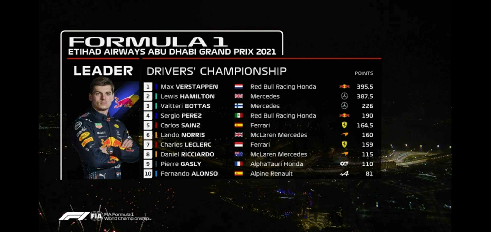
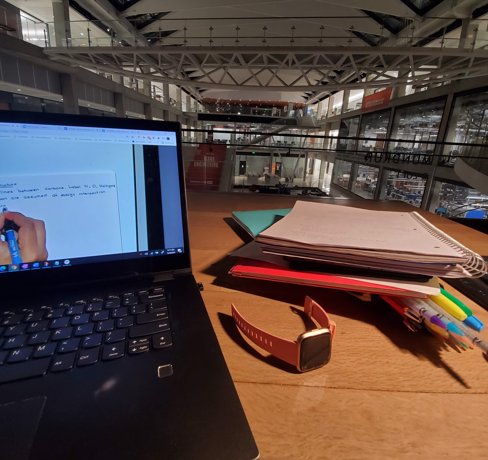
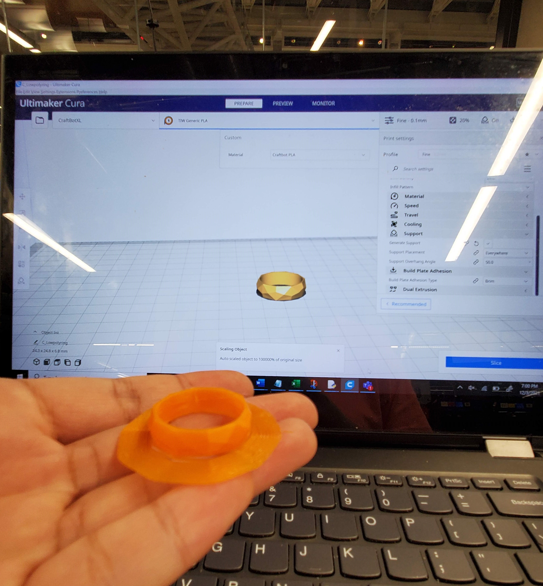

Fall 2021: Breaking the Status Quo
A semester full of adventure and broke the status quo by getting out of my comfort zone to achieve what I thought was impossible.
If I was given the opportunity to rewrite history Fall 2021 won't be one that I would want to rewrite...because it was the semester of being in-person/hybrid setting for the first time in college and engineering Kimberly started to blossom.
Global LLC
 My first thought of campus was coming to my new home for the next year. A combination of half domestic students, one of them being me, and the other half was international students. I never would have thought how much they changed my life for the better and I am grateful to be given the chance and argeed to stay in the Global Living Learning Community. The first year I did it virtually, but in-person it was different, a more personal approach.
My first thought of campus was coming to my new home for the next year. A combination of half domestic students, one of them being me, and the other half was international students. I never would have thought how much they changed my life for the better and I am grateful to be given the chance and argeed to stay in the Global Living Learning Community. The first year I did it virtually, but in-person it was different, a more personal approach.
The people in the dorm made me realize that life is short because most of the international people were exchange, so because of their limited time in the US they wanted to explore and travel and ingitied my ambition to try something new.
Motto:
My roommate was Marie, older than me, but young at heart. A future friend that I will be able to cheer Formula 1 and wake up early for different time zones to watch together.
So why was this a year of breaking the status quo? Besides, putting myself into a new environment with international people who I never met until going in the dorm, it is because I started to manufacture parts for Texas Guadaloop, engineering project team that researches how to build an electrically proposed Hyperloop pod that utilizes air-bearing technology to revolutionize modern transportation by revolutionizing technology to change the world.
Texas Guadaloop: Transition from Business to Suspension
I was previously on the business team, and I noticed I felt I was repeating the past from my high school robotics team being on the business team, and making the "excuse" that I won't ever manufacture or learn SolidWorks or code because I felt it is better to benefit the team by my knowledge of business and marketing than focus on myself. However, I notice the repeative cycle didn't make me as happy as I thought I would be, so I communicated with the Engineering Lead, Trevor, of wanting to switch from business to engineering subsystems. Fast forward months of design and redesigns with the help of my suspension lead, Rohan. I felt the smile in my face of reminding myself that I was chasing my dream and checking off those boxes of wanting to manufacture that I knew high school me would be proud of myself of what I accomplished.

Within four months, I was able to accomplish 3D printing training, Lathe, Manual Mill and SolidWorks that I wanted to accomplish for the past four years. Thank you for the help of TexasInventionWorks at UT and Rohan, Texas Guadaloop's suspension lead for their guidance.
The team has completed Intent to Showcase for European Hyperloop Week that will happen in the Netherlands from July 18-24, 2022.
Coming Up
Texas Guadaloop
- Manufacture for Suspension
- European Hyperloop Week